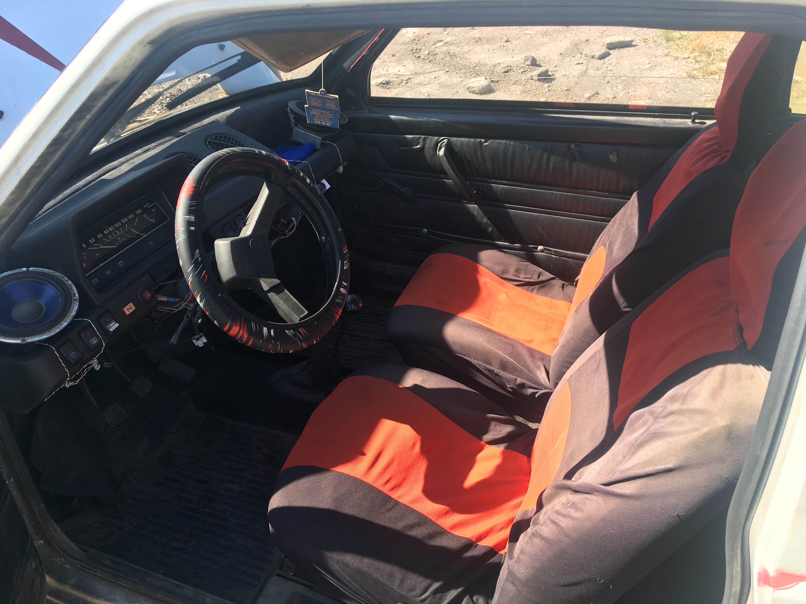
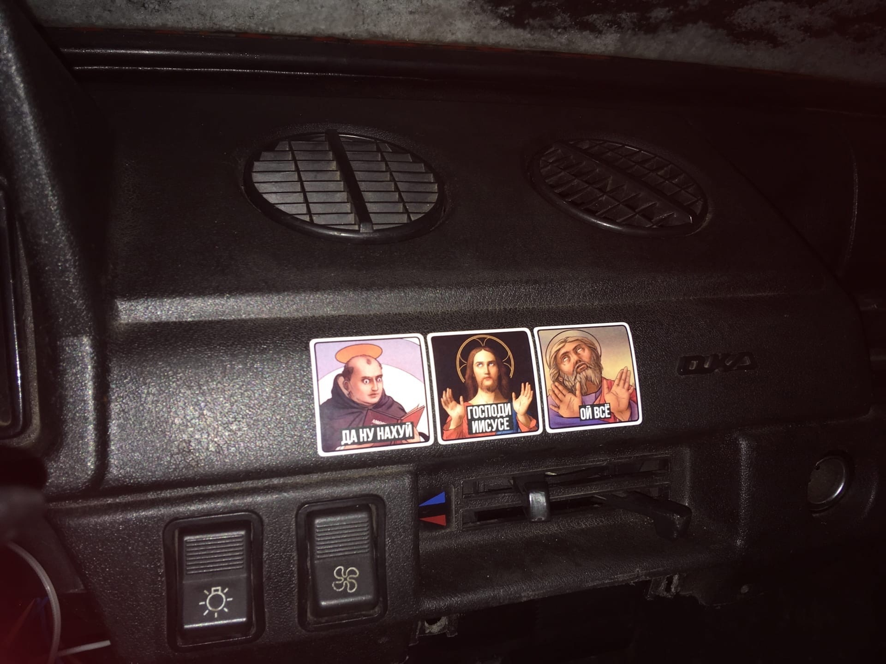
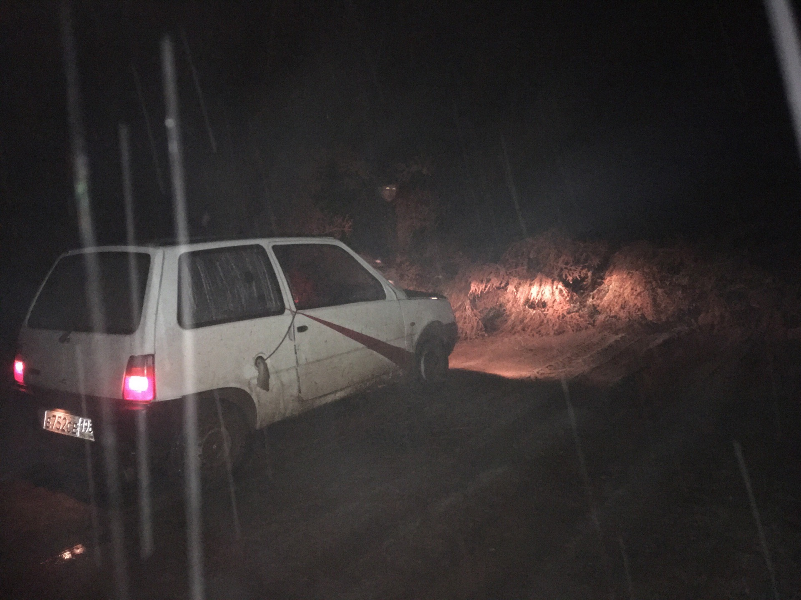
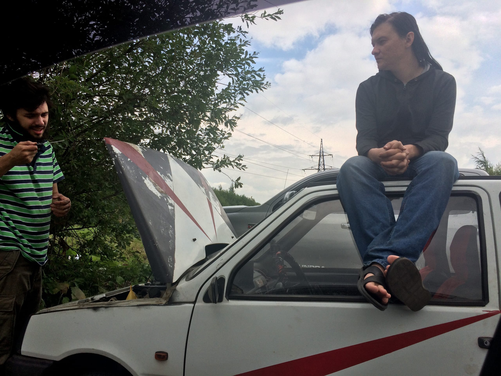
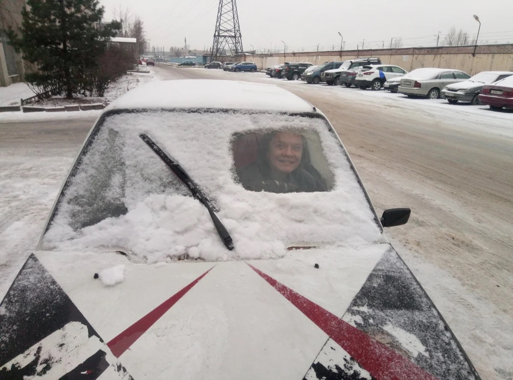

Ослиномобиль
Ослиномобиль — самый первый проект в ослинском гараже.
Немного истории: в 2019 году у нас появилась идея обзавестись муниципальным автомобилем для Ослино, чтобы разъезжать на нём всем селом, ездить за город, на дачу, на шашлыки и просто тусить.
Мы долго думали, какой же автомобиль выбрать. У нас были варианты: классические жигули, запорожец, или же ока. Жига жрёт много бензина и отличается крайней ненадёжностью, запорожец очень весёлый, но в нём куча своих недостатков, вроде того, что его хрен заведёшь зимой, а при разгоне у него так поднимается передняя часть, что рулить становится просто невозможно.
В итоге мы остановились на автомобиле Лада 11113 Ока производства КАМАЗ. Автомобиль был куплен в конце 2019 за 10 тысяч рублей, в нерабочем состоянии, без аккумулятора, с голыми шинами и категорическим нежеланием заводиться.
Дальше началось самое интересное: когда Ави вёз эту окушку в Питер на троссе, шины, из которых уже торчал корд, порвались, и всю дорогу из окна был слышен громкий шлёп-шлёп-шлёп. Ави купил для Ослиномобиля новые всесезонные шины (чтобы не тратить денег на переобувку) и новый аккумулятор, и после некоторых неуспешных попыток самостоятельно поставить её на ход, нам помогли автомеханики из интернетов, и в итоге, она завелась.
Радости нашей не было пердела. Мы тут же собрались на небольшой полигон недалеко от Таверны и протестировали, как она едет:
С этого момента началась история Ослиномобиля. Ави купил для окушки чехлы на сиденья и оплётку для руля и решил покрасить Ослиномобиль, чтобы он выделялся среди серых и невзрачных машин города. Был выбран остный красно-чёрный дизайн, который мы нарисовали в пейнте. Естественно, мы собрались красить менее 50% поверхности машины, чтобы не менять документы.
Здесь мы тоже лоханулись. Когда был покрашен слой чёрного цвета, мы думали наклеить поверх бумажный скотч и покрасить сверху красную часть. Но бумажный скотч кончился как раз перед тем, как мы начали красить капот. У Панамаря нашёлся обычный скотч, мы наклеили его и покрасили красную часть, но чёрная краска засохла не до конца, и когда мы отдирали скотч, куски краски оторвались прямо с ним, и выглядело это не очень. Но в принципе, потёртости не портят вид советских машин, так что мы решили оставить так:


Так как это русский автомобиль, мы решили налепить в него иконки. Но так как мы стёбная компания, то и иконки у нас были соответствующие:
После того, как Ослиномобиль стал полностью готов к эксплуатации, поставлен на учёт и все косяки по нему были исправлены, мы решили устроить ему боевое крещение. В самую жёсткую погоду, в конце февраля 2020, Ави, Ефим и Панамарь сели в это чудо советского автомобилестроения и поехали за 300 километров от Питера на дачу к Ефиму, в новгородскую область, в деревню, в которой нет ничего, даже магазинов. Ведёт туда только грунтовая дорога через лес, без асфальта и освещения, на которой куча ям, глины и снега вперемешку, и всё это при таком ветре, который сдувает эту оку нафиг с дороги.
За этот путь мы ни раз встрявали по самые двери в глине, но окушка всё успешно преодолевала. Хотя, не всё, один раз пришлось её выталкивать. Один раз мы заглохли посреди леса, а так как дело было ночью, то не было видно совершенно ничего. Подсветив фонариком с мобильного телефона, мы выкрутили и прочистили свечи, и она завелась и снова двинулась в путь.
Самое запоминающееся с того путешествия было то, что тогда передавали штормовое предупреждение, и ехав по глине недалеко от Водогона (новгородская область), мы наткнулись на упавшую сосну через всю дорогу. Недолго думая, Ефим и Панамарь, как самые тяжёлые, встали на эту сосну, прижав её к земле, а Ави, избегая чрезмерно глинястого пути, разогнался и переехал эту сосну. Вот эта сосна на фото:
Ока выдержала это испытание без проблем. Мы сгоняли на дачу, где было очень холодно, мы топили дровами печь и спали в куртках, но было весело и адреналин переполнял нас. Обратный путь тоже был весел: у нас практически не работал дворник, и глина, летевшая в лобовое стекло с дороги, очень мешала обзору. Периодически мы останавливались и вручную протирали стекло, но в результате это стало причиной того, что мы, на скорости 60 км/ч налетели на лежавший на дороге кирпич и выбили шрус.
Уставшие, мы решили оставить сломанную оку в Будогощи и вернулись в Питер на электричке, но на следующий день Ави поехал обратно в Будогощь, нашёл местных ребят, кто нашли новый шрус и починили оку, и окушка вернулась домой.
Всю эту историю мы записали на видео:
Правда, не всё с окушкой было так сказочно. Поначалу из-за установленного карбюратора от ВАЗ 2109, в котором предусмотрена обратка (а в оке её нет), часть бензина просто лилась на пол. Потом мы подключили к обратке карбюратора шланг, который вёл в канистру, расположенную внутри салона. И когда мы куда-то ездили, то периодически останавливались, переливали содержимое канистры в бак, снова ехали, через полчаса переливали канистру в бак и всё по новой. И лишь потом мы провели шланг по днищу машины и пустили его в бензобак, избавившись от запаха бензина в салоне и от всей этой мороки.
Один раз в ней просто заклинила коробка передач. Мы поехали на оке есть бургеры, а так как в ней не работал ручник, мы оставили её на первой передаче. Однако вернувшись, снять с передачи смогли, но больше никакая передача не втыкалась. Однако, машина не была на нейтралке, она ехала, будто была воткнута вторая передача.
В итоге мы заменили на ней коробку передач, всю систему охлаждения (помпу, шланги), всю тормозную систему (магистрали, колодки, суппорта), поменяли бибикалку и чего только с ней не сделали. Плюсом ко всему, она постоянно ела масло, причём, разбрызгивала его по всему подкапотному пространству через сальники.
Тем не менее, ока всегда заводилась, даже в морозы. Мог садиться аккумулятор, могла замерзать смесь воды и антифриза и не давать прокручиваться помпе, но в любые холода ока заводилась и ехала. Однажды после ледяного дождя вся машина покрылась коркой льда, но мы выдолбили на лобовом стекле квадратик, завели и поехали, как в танке:
Ока была верным другом нашей странной компании. Мы любили её, когда ездили на ней в магазин или за город, мы ругали её, когда она ломалась в самый неожиданный момент. Но ничто не вечно...
И вот, когда Ави по работе уехал в Москву в 2021, окой стало заниматься некому, а Ефим и Панамарь сидели по своим домам, никуда не выходя, и окушка стала простаивать. Потом Панамарь купил себе собственную машину и было принято решение продать Ослиномобиль. Мы написали объявление на auto.ru и спустя месяц ей нашёлся покупатель.
Мы отдали её за 30 тысяч, хотя вложили в неё в три раза больше. Мы будем помнить тебя, Ослиномобиль. Наш первый железный друг, кто подарил нам много незабываемых моментов!